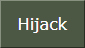
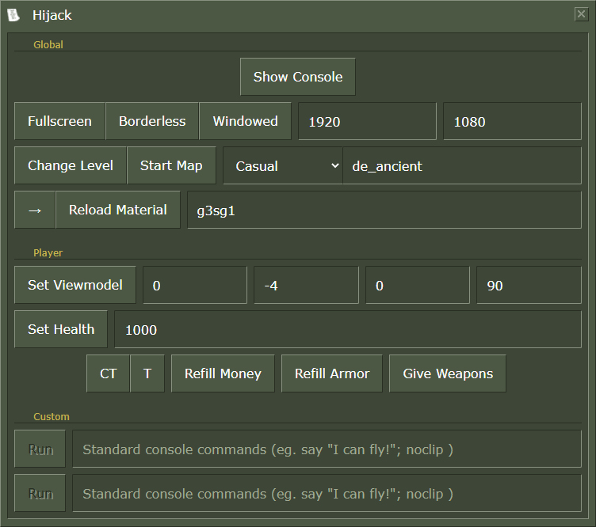

Hijack
Introduction
Named after the -hijack Source Engine launch option which it uses, this window can be accessed by clicking on the  button at the bottom left of the tool.
This feature allows you to run commands to the running CS:GO instance (only if launched from MIGI) but also run custom MIGI VScript functions from the click of a button.
This isn't injection or anything of the sort, it's only running csgo.exe a second time with -insecure -hijack +commandname.
It is best used in windowed or borderless mode, as you can simply click buttons and see the result directly, even better on two monitors.
Hijack window:

Commands
Various commands and VScript calls are available
The catch with some of the custom VScript functions is that they can be used even on sv_cheats 0 as VScripts can interact with entities directly,
but keep in mind that most commands can only be used if you're the host.
| Host | Button name | Executed command(s) | Description |
|---|---|---|---|
| Show Console | con_enable 1 showconsole |
Open the in-game console | |
| Video modes | mat_setvideomode {f} {b} {w} {h} | Change the current display mode and resolution | |
| ✓ | Changelevel | game_type {type} game_mode {mode} changelevel {mapname} |
Change the current map to the specified map |
| ✓ | Map | game_type {type} game_mode {mode} map {mapname} |
Start the server to a new map |
| Reload Material | mat_reloadmaterial {material} | Reload a material by substring. Also features an auto-reload toggle button on the left. |
|
| Viewmodel | viewmodel_offset_x {x} viewmodel_offset_x {y} viewmodel_offset_x {z} viewmodel_fov {fov} |
Viewmodel settings | |
| ✓ | Set Health | script "migi_setHealth(VALUE)" | Set the player's health |
| ✓ | CT/T | script "migi_setTeam(TEAM)" | Set the player's team without respawning |
| ✓ | Refill Money | script "migi_refillMoney()" | Max out the player's money |
| ✓ | Refill Armor | script "migi_refillArmor()" | Max out the player's armor |
| ✓ | Give Weapons | - | See Give Weapons |
| / | Custom | {any console command} ex: say Hijack is rad!; ent_fire !self addoutput "movetype 8" |
Run console commands, can run multiple if separated by semicolons |
Give Weapons
Give Weapons is a sub-window of Hijack allowing you to give yourself weapons based on what is available currently in the game.
MIGI addons' items_game.txt will get parsed and will show on the left side of the window.
CS:GO's items_game.txt will also show on the right.
A search-bar is also available and can be used to search by item ID or item name.
This uses the VScript functions MIGI adds, and is handled with a temporary game_player_equip entity.
Modified weapons from CS:GO will only display on the left, while untouched weapons will show up on the right.